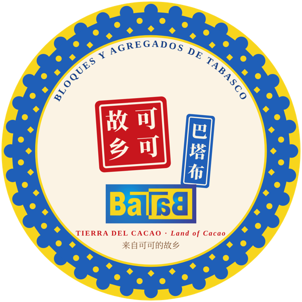
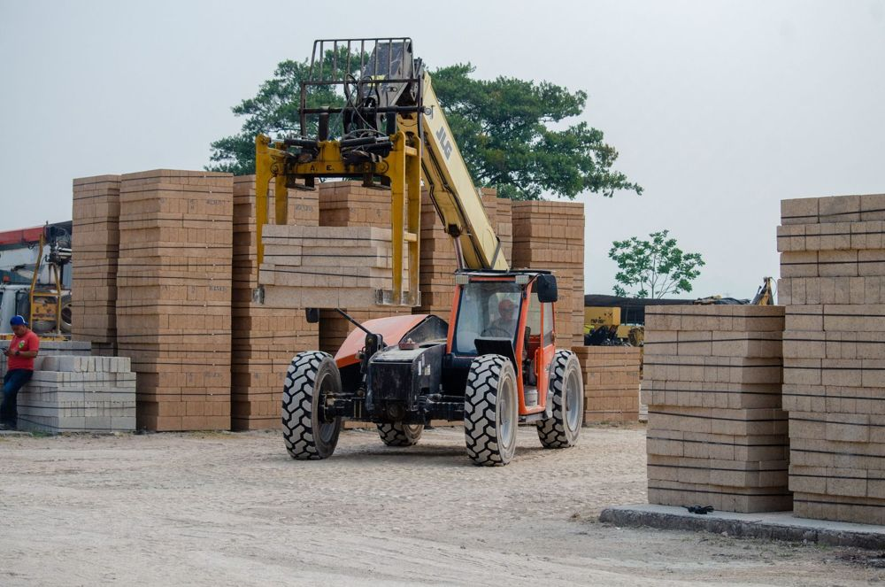
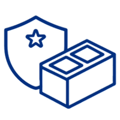
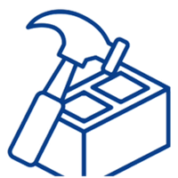

在同属塔巴斯科州的特阿帕（意为“石之河岸”），BATAB 把石头变成砌块。像那些玛雅建造者一样，我们也为您留下一条讯息：感谢您的友谊。In Teapa, also in Tabasco, whose name means "riverbank of stones," BATAB turns stone into block. Like those Maya builders, we leave you a message: thank you for your friendship.
墨西哥家族企业，二十多年来在特阿帕工厂生产混凝土砌块，采用自动配料系统，每批产品都经过质量检测。A Mexican family company making concrete block for over 20 years at our Teapa plant, with automatic batching and quality control on every lot.
Besser 与 Columbia 设备生产 · 从工厂和比亚埃尔莫萨配送中心直送工地。Produced on Besser and Columbia machines · delivered from our plant and our Villahermosa distribution center.



Gerardo Espadas
Director General · BATAB